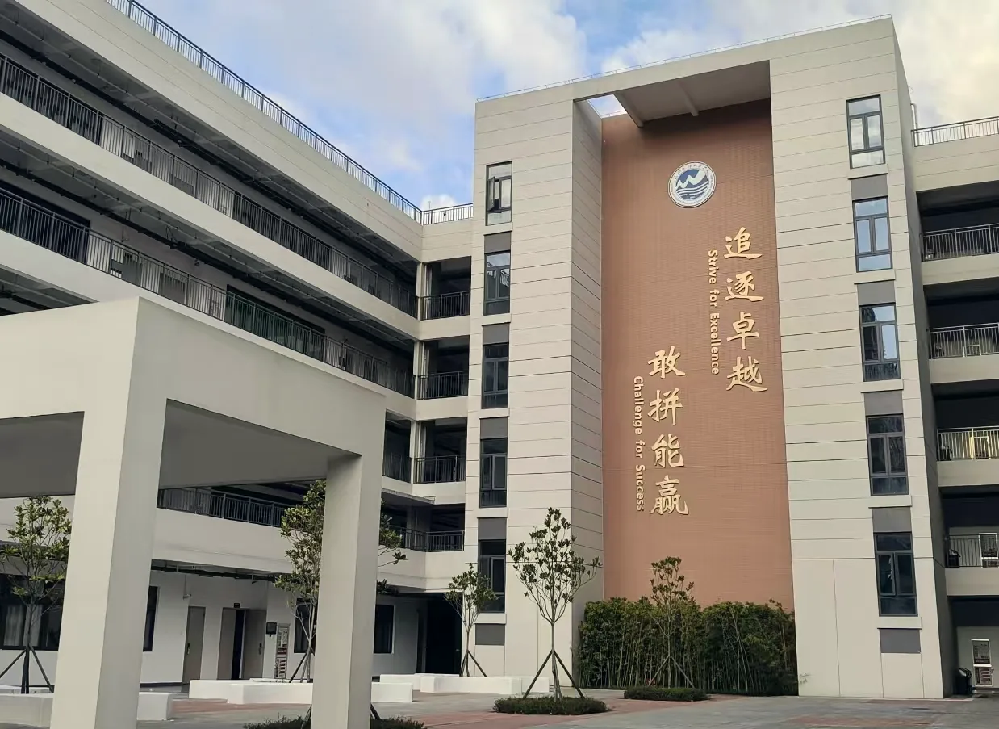

走廊里的光
上午十点，光会贴着走廊的墙走一段。教室门开着的时候， 能看见黑板上的字被照亮一半——那是上课最好的时候。
建筑是校园最沉默的老师。它安排好了光从哪扇窗进来、风在哪条廊道穿过、 你在哪个转角会遇到同学。福州外语外贸学院的每一栋楼， 都在替这所学校说话。

宽敞明亮的教学场所，是同学们汲取知识、课堂研讨的主要阵地。 铃声落下，走廊会在几十秒里被脚步填满，又在下一节课的铃声中重新安静。
楼里的每一间教室都有自己的时刻表：上午是专业课的板书声， 下午是小组讨论的低声争辩，傍晚偶尔留下几个还在改作业的人。
上午十点，光会贴着走廊的墙走一段。教室门开着的时候， 能看见黑板上的字被照亮一半——那是上课最好的时候。
靠窗第五排的位置最抢手：有光、有插座、抬头能看见树。 期末周的时候，这里会一直亮到闭馆音乐响起。
体育场亮灯之后，跑道会变成一条发光的环。有人在跑配速， 有人只是慢慢地走，把一天的事想一遍。
球滚到角落，灯还亮着几盏。有人蹲在场边系鞋带， 有人隔着半个球场喊话——校园的热闹，退潮得也很有秩序。
校园建筑不仅是教学活动的载体，更是校园文化的物质体现。 福州外语外贸学院将现代设计理念与育人思想相结合， 为广大师生打造舒适、开放的学习生活空间。
在这里，每一栋楼宇都见证青年学子的逐梦旅程： 有人在教学楼里第一次讲完整段英语，有人在图书馆里读完了人生第一本厚书， 有人在操场上把八百米跑成了习惯。建筑不说话，但它全都记得。
← 返回校园福韵